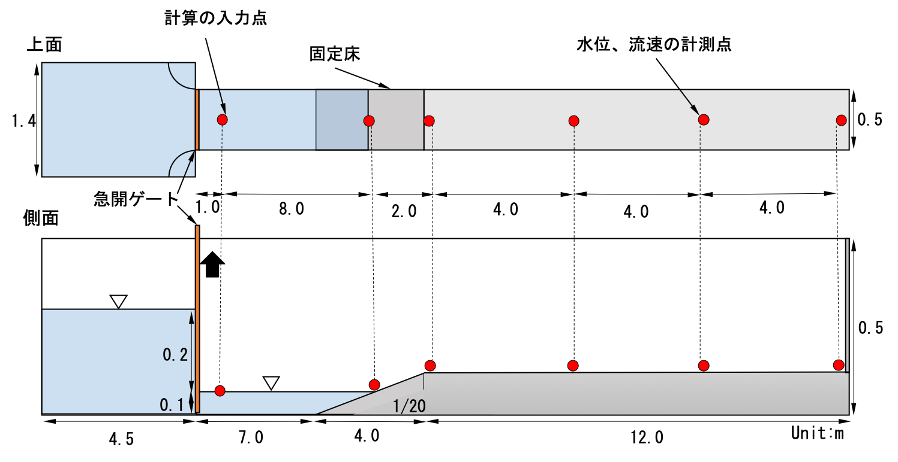
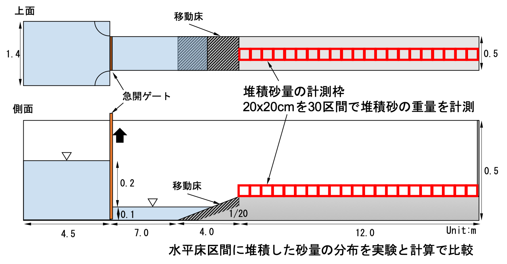

課題７ 津波遡上に伴う陸域堆積物の形成
概要
津波によって陸域に形成される堆積砂の形成メカニズムに関する水理実験結果を用いて，数値シミュレーションによる再現計算を実施し，堆積砂量の空間分布の再現性を検証する．
内容
課題の背景と目的
津波堆積物は，津波来襲の履歴を知る上で直接的な証拠となるものであり，津波堆積物の形成過程を理解することは重要な課題である．さらに，津波堆積物の形成は，来襲津波の特性，地形の条件，堆積物を構成する土砂の条件などにより影響を受け，最終的な堆積物として分布することになる．実験では，津波の入射条件，地形条件，土砂条件を設定し，水平床陸上部へ形成される堆積砂量の空間分布と津波の水位と流速を計測した．
本課題では，このような実験結果に対して，数値シミュレーションモデルによる津波堆積物分布の再現性について検証を行い，津波堆積物の形成過程についてデータに基づいた議論を行う．
実験条件（図-1を参照）
- 水路は貯水タンク，水路部（水平部～斜面～水平部）で構成
- 貯水タンクのゲート急開により段波（津波）を発生
- 貯水タンクは，長さ4.5m，幅1.4m，水深0.3mとし，ゲートを挟んで長さ7.0m，幅0.5m，水深0.1mの水路部水平床区間に接続
- 貯水タンクからゲートを通過する流れの安定のために半径0.45mの扇型のガイドを貯水タンク内ゲート側二角に設置
- 水路陸上水平部の端は直立する不透過壁面
- 斜面に板を設置した条件（以下，固定床実験）と硅砂を敷き詰めた条件（以下，移動床実験）の２種類を設定
- 固定床実験では，超音波波高計を使用して水位，電磁流速計とプロペラ流速計を使用して流速を測定（計測位置は図-2を参照）
- 移動床実験では，ゲート直後で水位と流速を測定（計測位置は図-2の「計算の入力点」）
- 移動床実験では，7号珪砂，6号珪砂，5号珪砂を使用
- 移動床実験では，7号珪砂，6号珪砂，5号珪砂を一定の比率で混合して使用（硅砂の粒度分布データは事前に公開）
- 移動床条件では，サンドキャッチャー（図-3の計測枠，0.2m×0.2mに区分）を使用して，陸域の堆積砂量を計測（ハッカソンで比較するデータ）
比較方法
- 外力条件の設定は，上記のゲート急開を物理的にモデル化しても良いし，図-2の「計算の入力点」での水理量を境界条件として与えても良い．
- 硅砂の粒度分布データは事前に公開されるが，分布を考慮するか，一様粒径を仮定するかは計算チームが決定できる．
- 固定床実験で計測された水位・流速の時系列データ（事前に公開される）と計算結果を事前に比較し，流況の再現性を事前に確認する．
- 堆積砂量の空間分布をハッカソンにおいて比較するため，計算結果（図-3の計測枠内の堆積砂量(g)）を提出する．
事前公開データ（2020年2月末までに公開予定）
- 固定床実験で計測された水位・流速の時系列データ
- 移動床実験で計測された水位・流速の時系列データ
- 硅砂の粒度分布データ
お問い合わせ
tsnm-wg4[at]cm.kansai-u.ac.jp
※送信する際は[at]を@に変更してください．
図面
図-1 実験条件

図-2 固定床での水理量計測

図-3 堆積砂量の計測と比較方法